<title>11·12장 구현안</title>
<meta name="claude:viewport-fit-sides" content="cover">
<link rel="preconnect" href="https://fonts.googleapis.com">
<link rel="stylesheet" href="https://fonts.googleapis.com/css2?family=Gowun+Batang:wght@400;700&family=IBM+Plex+Sans+KR:wght@400;500;600&display=swap">
<style>
/* layout: one reading column; renders run full column width, tables scroll in their own box */
:root{
  --bg:#f3f4f2; --panel:#ffffff; --fg:#1d2124; --muted:#5d666c; --line:#d5d9d6;
  --accent:#2d5b7a; --enemy:#9b2f24; --ally:#2f6b45; --note:#8a6a12;
  --display:"Gowun Batang","Noto Serif KR",serif;
  --body:"IBM Plex Sans KR","Apple SD Gothic Neo","Malgun Gothic",sans-serif;
}
@media (prefers-color-scheme: dark){:root:not([data-theme="light"]){
  --bg:#15191c; --panel:#1d2327; --fg:#e4e8e6; --muted:#9aa4a9; --line:#323b40;
  --accent:#7fb0d3; --enemy:#e07a6c; --ally:#79c08f; --note:#d9b44a; color-scheme:dark}}
:root[data-theme="dark"]{
  --bg:#15191c; --panel:#1d2327; --fg:#e4e8e6; --muted:#9aa4a9; --line:#323b40;
  --accent:#7fb0d3; --enemy:#e07a6c; --ally:#79c08f; --note:#d9b44a; color-scheme:dark}
body{background:var(--bg);color:var(--fg);font-family:var(--body);font-size:15px;line-height:1.7;
  padding-left:max(16px,env(safe-area-inset-left,0px));padding-right:max(16px,env(safe-area-inset-right,0px));padding-block:32px 64px}
main{max-width:980px;margin:0 auto;display:flex;flex-direction:column;gap:40px}
h1,h2,h3{font-family:var(--display);text-wrap:balance;line-height:1.3;margin:0}
h1{font-size:2rem} h2{font-size:1.5rem;border-bottom:2px solid var(--fg);padding-bottom:6px} h3{font-size:1.15rem}
p{margin:0;max-width:68ch}
section{display:flex;flex-direction:column;gap:16px}
.lede{color:var(--muted)}
.tag{display:inline-block;font-size:.75rem;letter-spacing:.04em;padding:1px 8px;border-radius:3px;border:1px solid currentColor;margin-right:6px;vertical-align:2px}
.tag.new{color:var(--accent)} .tag.keep{color:var(--muted)} .tag.ask{color:var(--note)}
figure{margin:0;display:flex;flex-direction:column;gap:6px}
figure img{width:100%;height:auto;border:1px solid var(--line);image-rendering:pixelated;background:#222}
figcaption{font-size:.85rem;color:var(--muted)}
.shots{display:grid;grid-template-columns:repeat(auto-fit,minmax(min(100%,420px),1fr));gap:14px}
.script{background:var(--panel);border:1px solid var(--line);padding:14px 18px;display:flex;flex-direction:column;gap:6px}
.script .d{color:var(--muted);font-size:.9rem}
.script b{font-weight:600;color:var(--accent)}
.wrap{overflow-x:auto}
table{border-collapse:collapse;width:100%;font-size:.9rem;min-width:560px}
th,td{border-bottom:1px solid var(--line);padding:6px 8px;text-align:left;vertical-align:top}
th{font-weight:600;color:var(--muted);font-size:.8rem;letter-spacing:.03em}
.e{color:var(--enemy);font-weight:600} .a{color:var(--ally);font-weight:600}
ol.q{margin:0;padding-left:1.4em;display:flex;flex-direction:column;gap:10px}
ul{margin:0;padding-left:1.2em}
.chap{font-family:var(--display);font-size:.95rem;color:var(--accent)}
code{font-size:.85em;background:var(--panel);border:1px solid var(--line);padding:0 4px}
</style>

<main>
<header style="display:flex;flex-direction:column;gap:10px">
  <span class="chap">한실중흥 · 2부 하북 → 서주</span>
  <h1>11·12장 구현안</h1>
  <p class="lede">장면에는 유비·관우·장비와 그 장면에 필요한 사람(조운, 손건, 태사자 등)만 세웁니다. 간옹·번궁은 탐험에서만 만납니다. fullstory.md의 11장(서주의 구원 요청 · 북해 전투)과 12장(불탄 마을 · 서주 전투) 개요를 장면과 전투맵으로 옮긴 안입니다. 게임 데이터에는 아직 넣지 않았습니다. 모든 그림은 게임 렌더러로 그렸고, 원본은 <code>ver5/plan/ch11_12/</code>에 있습니다. 대사는 줄거리를 보이기 위한 초안이며, 확정 대본은 S#마다 하나씩 따로 보여 드리고 승낙을 받겠습니다.</p>
</header>

<section>
  <h2>흐름</h2>
  <div class="wrap"><table>
    <tr><th>장</th><th>장면</th><th>맵</th><th>무엇이 바뀌나</th></tr>
    <tr><td>11</td><td>S#1 계교 강가, 밤 <span class="tag keep">구현됨</span></td><td>S_gongsun_camp</td><td>백마, 조운이 곁에 남음</td></tr>
    <tr><td>11</td><td>S#2 원소의 사자 진진</td><td>S_tent_mid(공손찬의 막사)</td><td>조롱 편지 → 칼을 뽑은 공손찬을 유비가 막고 관우가 진진을 데리고 나감 → 공손찬이 화친을 정하고 유비에게 인수를 줌(18장 복선)</td></tr>
    <tr><td>11</td><td>해설 · 화친, 북평으로</td><td>—</td><td>몇 차례 교섭 끝에 화친. 공손찬과 함께 북평으로 돌아감</td></tr>
    <tr><td>11</td><td>S#3 북평 · 공손찬의 부중</td><td>S_council 재사용</td><td>서주목 도겸의 막료 손건이 구원을 청함. 손건이 길잡이로 동행(합류는 13장)</td></tr>
    <tr><td>11</td><td>탐험 · 북평 성 안</td><td>신도성 S_xindu 재사용</td><td>궁병·무도가 승급, 부관 임명을 알려 주는 사람들. 관우에게 출진</td></tr>
    <tr><td>11</td><td>S#4 북해로 가는 길</td><td>들판 길(전투 흔적을 지운 사본)</td><td>길을 가던 중 태사자가 말을 몰고 와 공융의 구원 요청을 전함</td></tr>
    <tr><td>11</td><td><b>B11 북해 전투</b></td><td>새 맵 16×15</td><td>여울 건너기, 뒤에서 황건 증원. 조운 대 관해. 부목표 태사자 생존 → 인수</td></tr>
    <tr><td>12</td><td>S#1 북해성 문 앞</td><td>S_castle_out(해자 앞 나무 걷기)</td><td>공융의 감사, 태사자가 인수를 주고 작별</td></tr>
    <tr><td>12</td><td>탐험 · 북해성 안</td><td>새 맵 S_beihai</td><td>서주 전투 전 정비, 관우에게 출진</td></tr>
    <tr><td>12</td><td>S#2 불탄 마을</td><td>새 맵 S_xuzhou_ruin</td><td>출진 직후. 싸움인 줄 알고 들어선 마을이 조조군의 학살 자리</td></tr>
    
    <tr><td>12</td><td><b>B12 서주 전투</b></td><td>새 맵 24×24</td><td>사수가 맵을 반분, 동쪽 다리로 고순 구원. 갈림길 둘: 「고순 가족 생존」, 「제갈현 생존」+육도</td></tr>
  </table></div>
</section>

<section>
  <h2>11장 · 서주의 구원 요청</h2>

  <h3>S#2 원소의 사자 (공손찬의 막사) <span class="tag new">고침</span></h3>
  <div class="shots">
    <figure><figcaption>① 공손찬이 (B) 자리에서 편지를 읽음. 진진은 (A) 입구 쪽, 삼형제는 탁자 옆</figcaption></figure>
    <figure>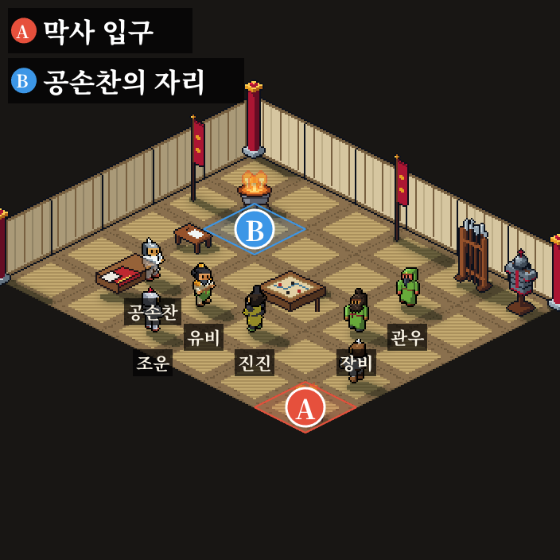<figcaption>② 공손찬이 칼을 뽑고 다가섬. 유비가 사이로 들어선 뒤 관우 쪽을 보며 말풍선 「……」(정지 그림이라 말풍선은 안 보임)</figcaption></figure>
    <figure>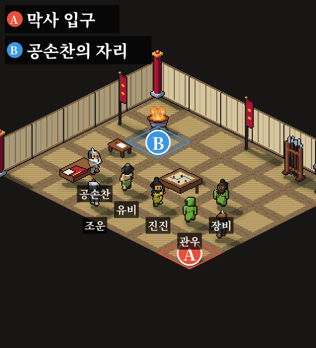<figcaption>③ 관우가 진진 곁으로 와서 쉴 곳으로 안내함</figcaption></figure>
    <figure><figcaption>④ 관우·진진이 (A)로 나간 뒤, 공손찬이 자리에 앉고 유비가 탁자 앞에 섬</figcaption></figure>
  </div>
  <div class="script">
    <span class="d">진진이 원소의 화친 편지를 바친다. 공손찬이 자리에서 펼쳐 읽다 얼굴이 굳는다.</span>
    <span><b>공손찬</b> "……백마가 계수를 건너는 모습이 참으로 볼 만했다고? 다음엔 물에 빠지지 않게 조심하라고?"</span>
    <span><b>진진</b> "장군, 소인은 화친의 글이라고만 들었습니다. 봉인을 뜯어 본 적이—"</span>
    <span class="d">공손찬이 칼을 뽑아 들고 걸어 나온다. 유비가 그 앞으로 들어선다.</span>
    <span><b>유비</b> "형님, 칼을 거두십시오. 사자를 베면 화친을 깬 사람은 형님이 됩니다."</span>
    <span class="d">유비가 공손찬을 막아선 채 고개만 돌려 관우를 본다. 머리 위에 말풍선 「……」.</span>
    <span><b>관우</b> (진진 곁으로 가서) "먼 길 오셨소. 사자께서 쉬실 곳으로 모시겠소."</span>
    <span class="d">관우가 진진을 데리고 막사 밖으로 나간다. 공손찬이 칼을 거두고 자리로 돌아가 털썩 앉는다.</span>
    <span><b>공손찬</b> "원본초 이놈……. 화친을 하자면서 나를 비웃고, 내가 사자를 베면 화친을 깬 놈으로 만들고. 양쪽으로 나를 갖고 놀았어."</span>
    <span><b>공손찬</b> "……머리가 좀 식으니 정신이 드는군. 백마의종이 반이나 꺾였다. 지금은 화친하고 군사를 추스를 때다."</span>
    <span><b>공손찬</b> "사자에게는 내가 화친을 받아들인다고 전하겠다."</span>
    <span><b>유비</b> "좋은 결정이십니다, 형님."</span>
    <span><b>공손찬</b> "……아까는 네 덕에 원본초 손에 놀아나지 않았다. 이거나 받아 둬라." → <b>중급 인수</b></span>
  </div>
  <p>진진은 여기서 일부러 살려 둡니다. 18장에서 원소에게 몸을 의탁한 유비의 편지를 조조 밑의 관우에게 전하는 사자가 되고, 원소의 흉계를 알려 유비를 빼낸 뒤 합류합니다. 연의에서도 유비의 편지를 관우에게 전한 사람이 진진이고, 정사의 진진은 유비를 섬겨 촉의 신하가 됩니다. 지금 <code>characters_story.json</code>의 진진은 "국의와 함께 쇠뇌 부대를 맡는 장수"로 되어 있어, 합류할 문관(학자 계열)으로 고쳐야 합니다.</p>

  <div class="script"><span class="d">해설: 원소 진영과 몇 차례 사자가 오간 끝에 화친이 이루어졌다. 공손찬은 유비와 함께 북평으로 돌아갔다.</span></div>

  <h3>S#3 북평 · 공손찬의 부중 <span class="tag new">고침</span></h3>
  <div class="shots">
    <figure><figcaption>공손찬이 (A) 상석에 앉아 있고, 손건이 들어와 고개를 숙임. 연합 회의장 맵(S_council) 재사용</figcaption></figure>
  </div>
  <div class="script">
    <span><b>손건</b> "서주목 도겸 공의 막료, 손건이라 하옵니다."</span>
    <span><b>손건</b> "조조가 아비의 원수를 갚는다며 서주로 쳐들어왔습니다. 사군께서는 팽성에서 잔을 나누신 공손 장군의 의리를 믿고 구원을 청하라 하셨습니다."</span>
    <span><b>공손찬</b> "화친은 했다만 원본초는 믿을 놈이 못 된다. 나는 북평을 비울 수 없어. 현덕, 네가 가라. 자룡도 데려가고."</span>
    <span><b>유비</b> "팽성에서 도 사군께 받은 곡식 값을 갚을 때가 됐군요."</span>
    <span><b>손건</b> "서주까지는 제가 길을 안내하겠습니다. 청주를 지나 북해를 거쳐 가는 길입니다. 북해는 제 고향이라 길이 훤합니다."</span>
  </div>
  <p>손건은 이름만 밝히고 자는 말하지 않습니다(낮은 사자가 장군 앞에서 하는 소개). 도겸은 이 무렵 서주목이고, 그 뒤로는 "사군"으로 부릅니다. 손건은 길잡이로 동행하며 출전하지 않고, 13장 서주 계승에서 합류합니다. 이 원칙은 루트 <code>AGENTS.md</code>의 이야기 쓰기 항목에 적었습니다.</p>

  <h3>탐험 · 북평 성 안 <span class="tag new">추가</span></h3>
  <div class="shots">
    <figure>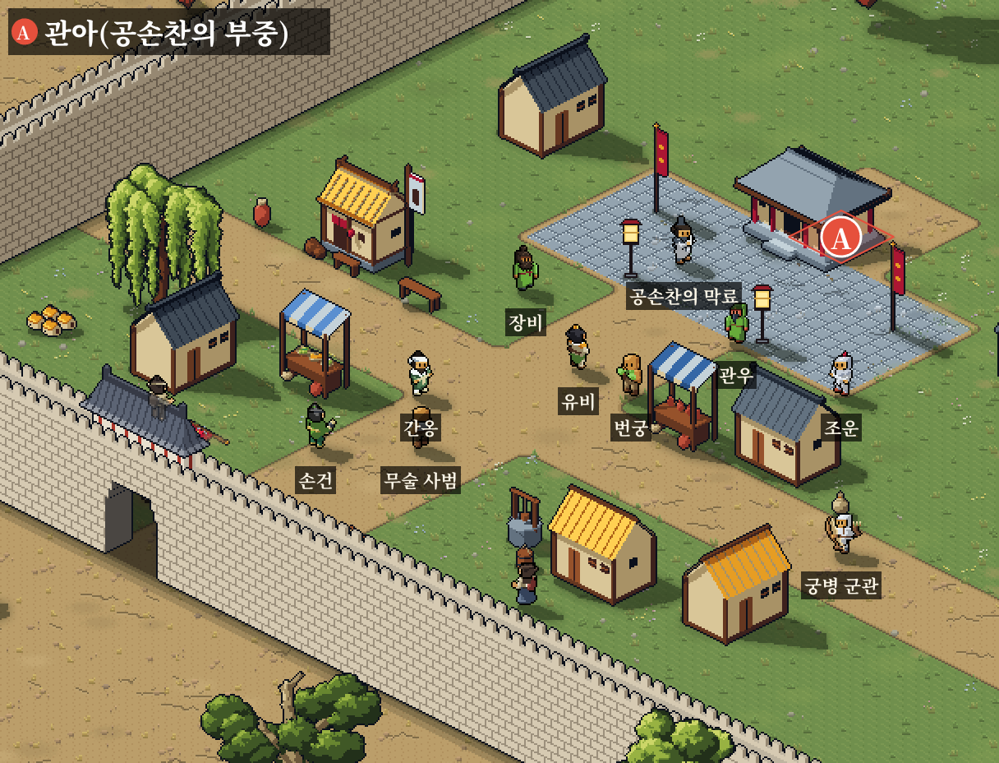<figcaption>관우(관아 앞)에게 말하면 출진. 신도성 맵(S_xindu)을 그대로 씀</figcaption></figure>
  </div>
  <div class="wrap"><table>
    <tr><th>누구</th><th>대사 초안</th></tr>
    <tr><td>궁병 군관</td><td>"궁병이 인수를 받으면 노병이 됩니다. 쇠뇌는 활보다 한 칸 더, 네 칸까지 날아가지요. 계교 다리 머리에서 국의의 노병 맛을 보셨을 겁니다."</td></tr>
    <tr><td>무술 사범</td><td>"맨주먹 무도가도 인수를 받으면 권사가 됩니다. 철 장갑을 끼고 연타를 퍼붓지요. 주먹은 피하고 되받아치는 데서 시작합니다."</td></tr>
    <tr><td>공손찬의 막료</td><td>"한 단계 위 병종이 된 장수는 '부관임명'을 익힐 수 있습니다. 부관은 따로 나가 싸우지 않고 주장 곁에 서서, 주장에게 모자란 재주를 메워 줍니다. 주장이 싸우는 걸 보며 부관도 함께 자라고요."</td></tr>
    <tr><td>관우</td><td>출진</td></tr>
  </table></div>
  <p><b>게임에 반영함:</b> 계교 직전 공손찬 진영(<code>explore10.json</code>)에 보병 군관(경보병 → 중보병·장창병)과 백마의종 기병(경기병 → 중기병·궁기병)을 넣었고(둘 다 끝에 "고유 조형 장수는 갈래가 정해져 있다: 유비는 중보병, 관우·장비·조운은 중기병"을 덧붙임), 신도성(<code>explore09.json</code>) 번궁의 첫 대사로 "나는 몸이 날래오. 상대의 공격을 흘려 피하고, 그 틈에 되받아치는 데는 자신이 있소."를 넣었습니다. 번궁의 말투(하오체)에 맞췄습니다.</p>

  <h3>S#4 북해로 가는 길 <span class="tag new">고침</span></h3>
  <div class="shots">
    <figure>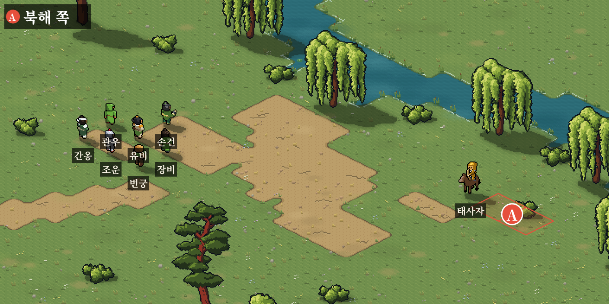<figcaption>① 일행이 길을 가는 중에 태사자가 말을 몰고 다가옴. 팽성 들판에서 부러진 창·쓰러진 깃발·모닥불·거적을 지운 사본</figcaption></figure>
    <figure><figcaption>② 태사자가 말을 세우고, 유비와 손건이 앞으로 나섬</figcaption></figure>
  </div>
  <div class="script">
    <span><b>태사자</b> "길을 막아 송구하오. 혹시 평원의 유현덕 공이시오?"</span>
    <span><b>유비</b> "그렇소만."</span>
    <span><b>태사자</b> "동래 사람 태사자, 자는 자의요. 북해 공융 공께서 황건에게 에워싸여 계시오. 어머니께서 공께 입은 은혜를 갚으라 하셔서, 포위를 뚫고 구원을 청하러 나왔소."</span>
    <span><b>유비</b> "문거 공께서……. 연합 진영에서 뵌 분이오. 서주로 가는 길이 북해를 지나니, 함께 갑시다."</span>
    <span><b>손건</b> "성을 에워싼 건 관해의 무리입니다. 성 동쪽에 진채를 세웠다고 들었습니다."</span>
  </div>
</section>

<section>
  <h2>B11 북해 전투 <span class="tag new">고침</span></h2>
  <figure>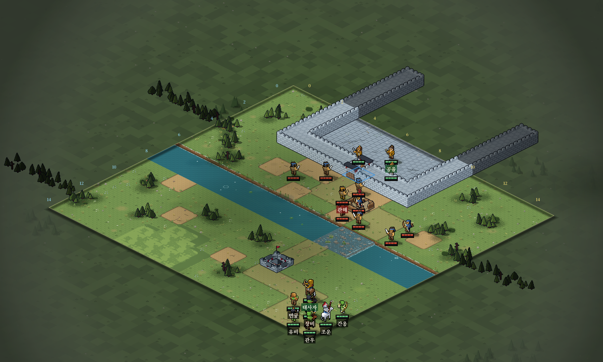<figcaption>16×15. 위쪽 노란 숫자는 X, 왼쪽 파란 숫자는 Y. 이름표 초록은 AI 아군, 빨강은 적 장수. 파란 마름모는 닫힌 성문. Lv 기준 18</figcaption></figure>
  <p>남쪽 모퉁이 길 → 길가의 성 (10,11) → 길 → 여울 (10~11, 7~8) → 길 → 황건 → 북동쪽 북해성. 성벽 줄은 y=3, 닫힌 성문은 (7,3)입니다. 성벽 양끝이 맵 밖으로 이어져 보이는 것은 맵 가장자리 칸을 바깥으로 늘여 그리는 규칙 때문이고, 성 안 거리가 이어진다고 읽히면 그대로 두고, 어색하면 맵 바깥 장식을 손보겠습니다.</p>
  <div class="wrap"><table>
    <tr><th>무엇</th><th>자리</th><th>메모</th></tr>
    <tr><td>유비군 출전 칸 7</td><td>남쪽 모퉁이 (12~15, 12~14)</td><td>최대 6, 필수: 유비·관우·장비·조운</td></tr>
    <tr><td class="a">태사자</td><td>(13,12)</td><td>처음부터 공격(AI). 북해 쪽으로 달려감</td></tr>
    <tr><td class="a">공융 + 북해병 둘</td><td>성 안 (6~8, 1~2)</td><td>성문이 닫혀 있어 나오지 않음</td></tr>
    <tr><td class="e">관해 (대장)</td><td>성문 앞 진채 (8,5)</td><td>조운과 일기토</td></tr>
    <tr><td class="e">성문 앞 황건 넷</td><td>(5~9, 4~6)</td><td>지킴. 증원이 오면 공격</td></tr>
    <tr><td class="e">강둑 궁병 둘 · 여울 앞 황건 둘</td><td>(9,5) (12,5) · (10,6) (12,6)</td><td>react. 여울을 건너는 쪽을 맞음</td></tr>
    <tr><td class="e">증원 황건 다섯</td><td>남서쪽 구릉 (5~7, 13~14)</td><td>유비군 장수가 강 북쪽(y 0~6)에 있는 채로 적 차례가 오면 나와서 공격. 구릉 위 황건은 배율 1.2</td></tr>
  </table></div>
  <ul>
    <li>승리: 관해를 물리친다. 패배는 기본(유비 퇴각)만</li>
    <li>부목표: 태사자가 살아남는다 → 전투 뒤 태사자가 <b>인수</b>를 선물로 줌</li>
    <li>증원이 나올 때 관해: "오, 동료들이 더 왔구나! 저놈들 등을 쳐라!" 길가의 성 (10,11)은 증원이 여울로 오는 길목 바로 위라, 한둘을 남겨 두면 증원을 막을 수 있습니다. 증원은 태사자가 혼자 앞서가도 나오지 않고 유비군 장수가 건너야 나옵니다.</li>
    <li>일기토: 조운 대 관해(관해 퇴각) — 확정</li>
  </ul>
</section>

<section>
  <h2>12장 · 불탄 마을 <span class="tag new">고침</span></h2>

  <h3>S#1 북해성 문 앞</h3>
  <div class="shots">
    <figure>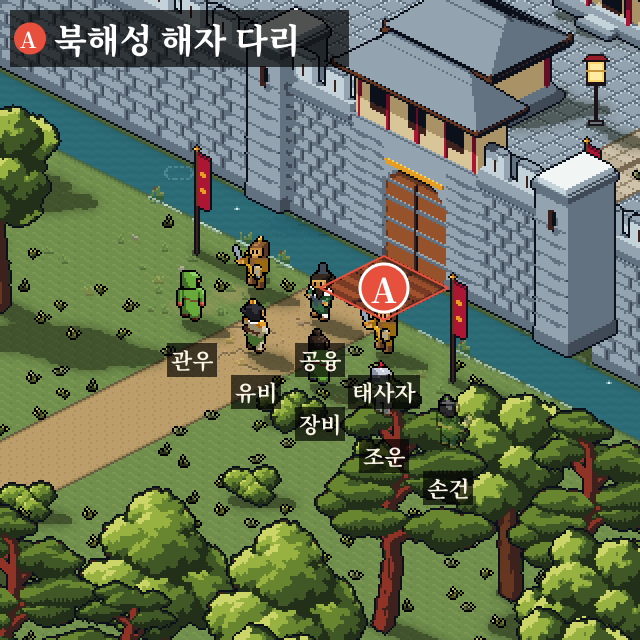<figcaption>지금 맵과 예전 배치: 해자 앞 나무가 일행을 가림</figcaption></figure>
    <figure>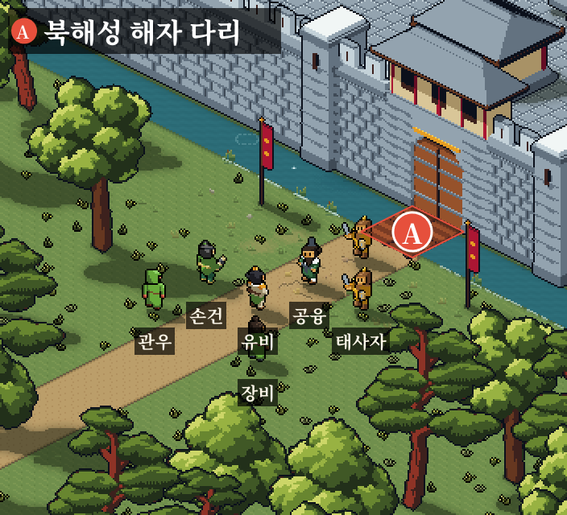<figcaption>시안: 사람을 가리던 해자 앞 덤불 다섯만 걷어 냄(나무는 그대로). 공융 옆에 태사자, 그 한 칸 뒤에 북해병, 유비의 왼쪽 뒤 관우·오른쪽 뒤 장비, 곁에 손건. 조운은 뺌. 북해병이 물에 서지 않게 모두 한 칸씩 좌하로 옮김</figcaption></figure>
  </div>
  <div class="script">
    <span><b>공융</b> "옛말에 이르기를, 어려울 때 온 벗이 참된 벗이라 하였소. 현덕 공께 큰 빚을 졌구려."</span>
    <span>〔부목표 달성〕 <b>태사자</b> "포위를 뚫을 때 공융 공께 받은 것이오. 내게는 과분하니, 공의 장수에게 쓰시오." → 인수</span>
    <span><b>태사자</b> "어머니께 은혜를 갚았다 말씀드릴 수 있게 되었소. 다음에 만날 때는 이 화살로 빚을 갚겠소."</span>
  </div>

  <h3>탐험 · 북해성 안 (정비) <span class="tag new">새 맵</span></h3>
  <div class="shots">
    <figure>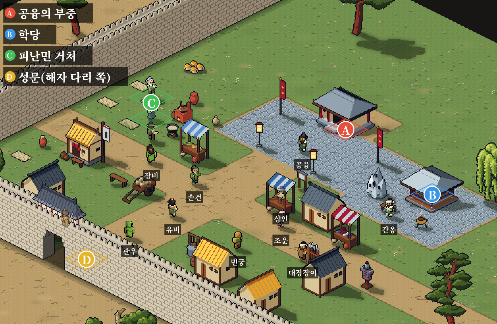<figcaption>새 장면 맵 S_beihai(16×14). (D) 해자 다리 쪽 성문으로 들어와 큰길 끝 (A) 공융의 부중, 동쪽 (B) 학당(정자·태호석, 공자의 후손이 다스리는 고을), 북서쪽 성벽 아래 (C) 포위 동안 들어온 피난민의 거적과 죽 쑤는 솥, 가로 거리에 주점·저잣거리·대장간</figcaption></figure>
  </div>
  <div class="wrap"><table>
    <tr><th>누구</th><th>대사 초안</th></tr>
    <tr><td>공융</td><td>"성 안 곳간을 열어 피난 온 이들에게 죽을 쑤고 있소. 옛말에 이르기를, 곳간이 차야 예를 안다 하였는데…… 지금은 곳간보다 사람이 먼저요."</td></tr>
    <tr><td>피난민</td><td>"서주에서 피난 왔습니다. 서주가 지금 난리예요……."</td></tr>
    <tr><td>상인 · 대장장이</td><td>도구점 · 무기점</td></tr>
    <tr><td>관우</td><td>출진 → S#2 불탄 마을</td></tr>
  </table></div>

  <h3>S#2 불탄 마을 (새 맵) <span class="tag new">새로 만듦</span></h3>
  <div class="shots">
    <figure><figcaption>① 서쪽 길로 들어선 일행. 불탄 집·잔해·숯·재, 태운 밭, 죽은 나무, 피 묻은 천과 주검, 꺾인 창, 그을린 깃발(A)</figcaption></figure>
    <figure>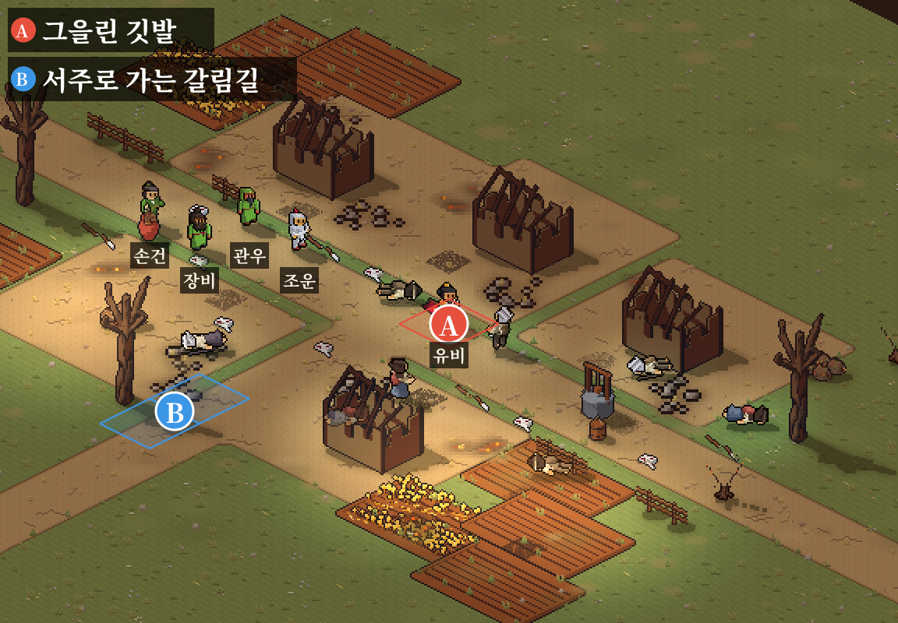<figcaption>② 유비가 깃발 앞에 서고 노인이 다가옴</figcaption></figure>
    <figure>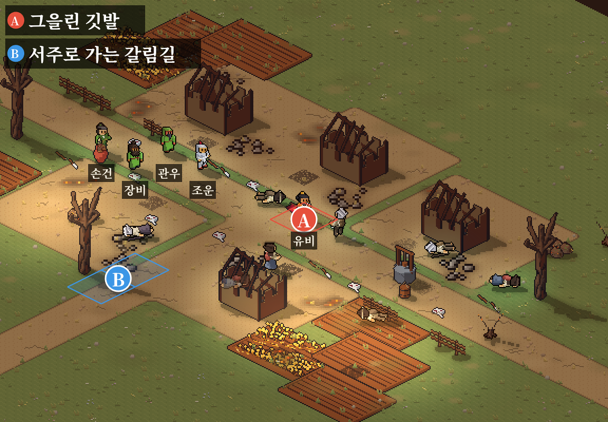<figcaption>③ 관우의 말풍선 「……」(정지 그림이라 말풍선은 안 보임)</figcaption></figure>
    <figure>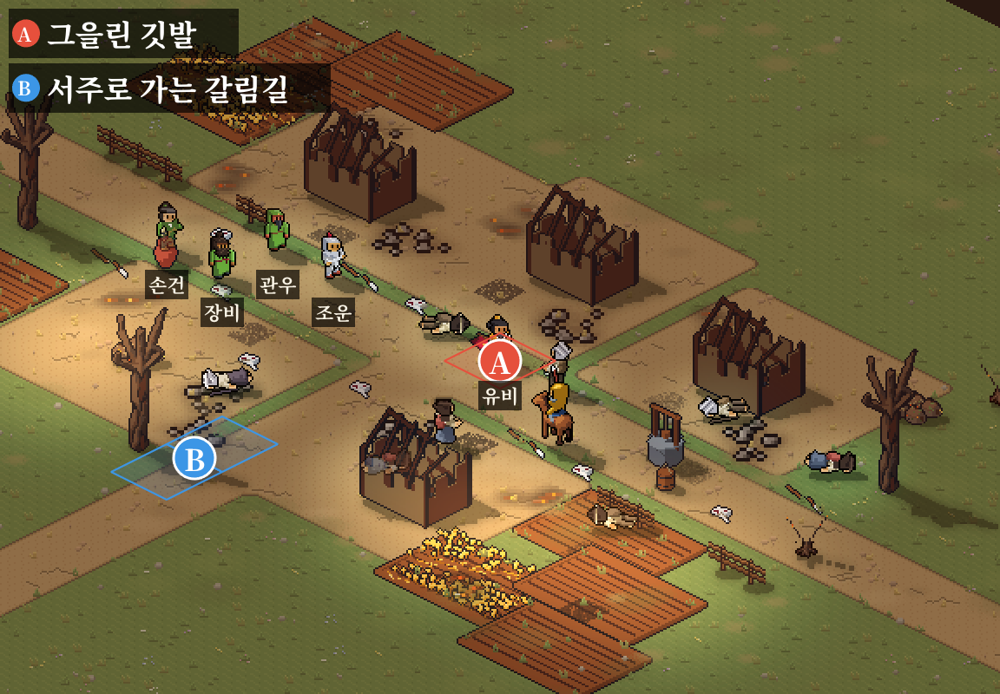<figcaption>④ (B) 남쪽 갈림길에서 정찰병이 말을 몰고 들어옴</figcaption></figure>
  </div>
  <div class="script">
    <span class="d">해설: 북해를 떠나 남쪽으로 내려온 지 사흘, 서주 땅에 들어서자 연기가 보였다.</span>
    <span><b>장비</b> "연기 나는 걸 보니, 여기서도 한바탕 붙었나 보네유."</span>
    <span class="d">앞서 걷던 조운이 멈춘다.</span>
    <span><b>조운</b> "싸움이라기엔……. 쓰러진 건 백성들뿐이군요."</span>
    <span class="d">일행이 주검 사이를 지나 그을린 깃발(A) 앞에 선다. 주검 곁에 앉아 있던 노인이 일어나 다가온다.</span>
    <span><b>노인</b> "조조 놈이 지 아비 원수를 갚는다면서…… 살아 있는 건 다 죽이고 다녔어……."</span>
    <span><b>손건</b> "조 장군의 부친이 서주 땅에서 해를 입으셨습니다. 사군의 부하였던 자가 저지른 일이고, 사군께서는 알지도 못하셨습니다……."</span>
    <span><b>장비</b> "그렇다고 이게…… 이게 사람이 할 짓이유!"</span>
    <span><b>관우</b> (말풍선) "……"</span>
    <span><b>유비</b> "……맹덕 공."</span>
    <span class="d">남쪽 갈림길(B)에서 정찰병이 말을 몰고 들어온다.</span>
    <span><b>정찰병</b> "남쪽 길에 서주성으로 가는 피난민 행렬이 있습니다! 조조군 기병이 뒤를 쫓고 있습니다!"</span>
    <span><b>손건</b> "고순 장군도 팽성 사람들을 데리고 그 길로 오고 있을 겁니다."</span>
  </div>
  <p>조조가 서주로 쳐들어왔다는 것은 11장에서 손건에게 이미 들었습니다. 이 장면은 그 결과를 처음 눈으로 보는 자리라, 깃발을 보고 놀라는 줄은 뺐습니다. 맵은 <code>plan/ch11_12/gen_ruin.py</code>로 만든 새 형식 2 장면 맵(14×10)입니다. 정지 그림이라 연기와 잔불(장면 효과)은 보이지 않습니다.</p>
  
  <p><b>주검:</b> 새로 만든 엎드린 백성 자세(<code>Pose: prone</code>)입니다. 백성 시트 넷(남·여·노인·노파)에 넣었고, 서쪽을 보는 세 방향을 그린 뒤 동쪽 세 방향은 좌우 반전입니다. 이 도트는 게임 데이터(<code>assets/sprites/commoner_*.spr</code>)에 이미 들어갔고, 아직 어느 장면에서도 쓰지 않습니다.</p>
</section>

<section>
  <h2>B12 서주 전투 <span class="tag new">다시 짬</span></h2>
  <figure>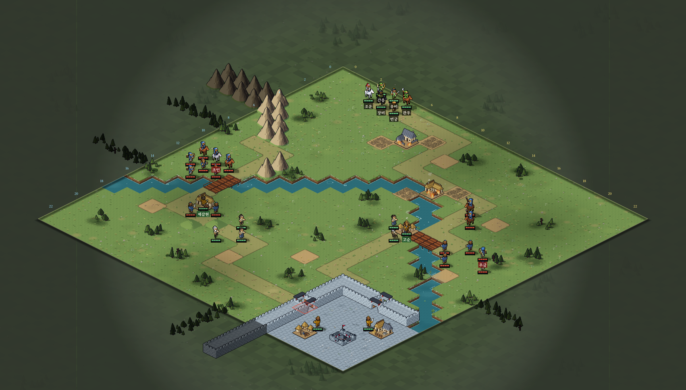<figcaption>24×24. 사수가 화면의 ㄱ자 바깥(위쪽 띠·오른쪽 띠)을 맵의 꼭 절반(264칸 대 264칸)으로 가름. 동쪽 다리 (16~17,10), 서쪽 다리 (4,13~14). 남쪽에 성곽을 두른 서주성, 관문 둘. Lv 기준 20</figcaption></figure>
  <div class="wrap"><table>
    <tr><th>무엇</th><th>자리</th><th>메모</th></tr>
    <tr><td>유비군 출전 칸 7</td><td>북쪽 꼭대기 (3~6, 0~1)</td><td>북동쪽으로 돌아 오른쪽 띠를 내려가 동쪽 다리로</td></tr>
    <tr><td class="a">고순 + 팽성 사람 둘</td><td>동쪽 다리 머리의 마을 (15,10)</td><td>마을에 기대어 지킴</td></tr>
    <tr><td class="e">우금(궁병, 대장) + 보병 셋·궁병 하나</td><td>다리 너머 (18~21, 9~11)</td><td>1턴부터 고순을 침. 구하지 않으면 4턴 안팎에 뚫리게 맞출 것. 장비와 일기토</td></tr>
    <tr><td class="e">우금 뒤 기병 둘</td><td>(16~17, 6~7)</td><td>react. 오른쪽 띠로 내려오는 유비군을 맞음</td></tr>
    <tr><td class="e">조인 + 기병 둘·보병 둘·궁병 둘</td><td>북서쪽 (1~3, 12~14)</td><td>산줄기로 유비군과 갈림. 3턴부터 서쪽 다리를 건너 서주성으로</td></tr>
    <tr><td class="a">제갈현</td><td>서쪽 다리 건너 마을 (5,16)</td><td>마을에 기대어 버팀</td></tr>
    <tr><td class="e">보병 둘</td><td>제갈현 곁 (6,16) (5,17)</td><td>제갈현을 침. 둘이면 버틸 만함</td></tr>
    <tr><td class="a">백성 셋</td><td>제갈현의 동남쪽 (8~9, 16~18)</td><td>남쪽 서주성 서문으로 도망</td></tr>
    <tr><td class="a">서주병 둘</td><td>서주성 안</td><td>지킴</td></tr>
  </table></div>
  <ul>
    <li>승리: 우금을 물리친다 · 패배: 조조군이 서주성 안에 들어간다</li>
    <li>갈림길 1(부목표): 고순과 팽성 사람이 하나라도 살아남는다 → <code>flag-gaoshun-family</code></li>
    <li>갈림길 2(부목표): 제갈현이 살아남는다 → <code>flag-zhugexuan</code> + <b>육도</b>. 조인이 내려오기 전에 동쪽 다리에서 서쪽 마을까지 가야 해서 어렵습니다(부목표는 어려워도 된다는 원칙대로).</li>
    <li>강은 화면 기준 가로·세로로 흘러 격자에서는 계단꼴이라, 물가가 톱니로 보입니다. 거슬리면 강 그리기를 손보거나 강을 격자 방향으로 바꿔야 합니다.</li>
    <li>서주성 성벽이 맵 가장자리에 닿아 바깥으로 이어져 보입니다(북해성과 같은 이유).</li>
  </ul>
  <div class="script">
    <span class="d">전투 대사 초안</span>
    <span><b>우금</b> "다리 건너 마을 하나다. 쏘아라. 저 장수만 꺾으면 서주성까지 막을 것이 없다."</span>
    <span><b>고순</b> "…………"</span>
    <span><b>유비</b> "저 다리 건너 깃발…… 고순이다! 동쪽 다리로 서두른다!"</span>
    <span><b>조인</b>(3턴) "서쪽 다리를 건넌다. 성까지 길을 쓸어라."</span>
    <span><b>제갈현</b>(2턴, 말풍선) "……여기서 끝날 수는 없다."</span>
  </div>
</section>

<section>
  <h2>새로 필요한 것</h2>
  <div class="wrap"><table>
    <tr><th>무엇</th><th>재사용 안</th><th>새로 그릴 것</th></tr>
    <tr><td>태사자</td><td>궁기병(horse_archer) 시트에 머리 교체</td><td>전투 도트·초상(수묵 담채)</td></tr>
    <tr><td>관해</td><td>황건 두목처럼 bandit 시트에 색만</td><td>초상</td></tr>
    <tr><td>우금</td><td>궁병 시트, 위 진영색</td><td>전투 도트 머리·초상</td></tr>
    <tr><td>제갈현</td><td>문관 비전투(official_noncombat)</td><td>전투용은 학자 시트에 머리만</td></tr>
    <tr><td>손건</td><td>인물 데이터·초상 있음, 비전투 도트 없음(11장부터 장면에 나옴)</td><td>비전투 도트(civ3d)</td></tr>
    <tr><td>진진</td><td>문관 비전투, 원소 진영색</td><td>인물 설명을 사자로 고침</td></tr>
    
    
    <tr><td>아이템</td><td>인수(있음), 육도</td><td>육도 아이콘(item-icon)</td></tr>
    <tr><td>전투맵 둘</td><td>지형 타일은 기존 것</td><td>불탄 마을 칸이 렌더에서 멀쩡한 마을로 보임. 넣을 때 불탄 마을 그림이 나오는지 확인</td></tr>
  </table></div>
</section>

<section>
  <h2>정해 주실 것</h2>
  <ol class="q">
    <li><b>해자 앞 덤불.</b> 시안대로 S_castle_out에서 덤불 다섯을 실제로 지울까요? 4장 팽성 장면에도 쓰이는 맵이라 그 장면도 함께 바뀝니다(사람을 가리던 덤불이라 나빠지지는 않을 것으로 봅니다).</li>
  </ol>
</section>
</main>
